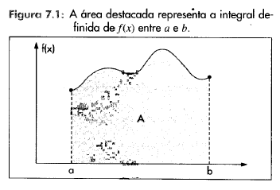

12 Integrals
12.1 Indefinite integral
Chamamos de integral indefinida de \(g(x)\) e indicamos pelo símbolo \(\int g(x) \ dx\) a uma primitiva qualquer de \(g(x)\) adicionada a uma constante arbitrária \(c\). Assim:
\(\int g(x)dx = f(x) + c\)
em que \(f(x)\) é uma primitiva de \(g(x)\) , ou seja, \(f'(x) = g(x)\).
12.1.1 Elementary functions
Podemos obter as integrais indefinidas das principais funções, que decorrem imediatamente das respectivas regras de derivação:
\(\int x^{n} dx = \cfrac {x^{n + 1}}{n+1} + c\), \(\forall n \in \mathbb{Z} \mid n \neq -1\), pois a derivada de \(\cfrac {x^{n + 1}} {n+1}\) é \(x^{n}\)
\(\int \cfrac {1} {x} \ dx = \ln x + c\), para \(x > 0\), pois a derivada de \(\ln x\) é \(\cfrac {1} {x}\)
Observe que se \(x < 0\) , \(\int \cfrac {1} {x} \ dx = \ln (-x) + c\)
Assim, de modo geral, podemos escrever: \(\int \frac {1} {x} \ dx = \ln |x| + c\)
Para qualquer real \(\alpha \neq -1\), \(\int x^{a} \ dx = \cfrac {x^{\alpha + 1}} {\alpha + 1} + c\), \((x > 0)\)
\(\int \cos xdx = \sin x + c\), pois a derivada de \(\sin x\) é \(\cos x\)
\(\int \sin xdx = - \cos x + c\), pois a derivada de \(- \cos x\) é \(\sin x\)
\(\int e^{x} \ dx = e^{x} + c\), pois a derivada de \(e^{x}\) é \(e^{x}\)
\(\int \cfrac {1}{1+x^{2}} \ dx = \arctan x + c\), pois a derivada de \(\arctan x\) é \(\cfrac {1}{1+x^{2}}\)
\(\int \cfrac {1}{\sqrt{1 - x^{2}}} \ dx = \arcsin x + c\), pois a derivada de \(\arcsin x\) é \(\cfrac {1}{\sqrt{1 - x^{2}}}\), para \(-1 < x < 1\)
Referências: Morettin, Hazzan, and Oliveira Bussab (2003)
12.1.2 Operative properties
\(\int [ f_{1} (x) + f_{2} (x) ] \ dx = \int f_{1} (x) \ dx + \int f_{2} (x) \ dx\)
\(\int [ f_{1} (x) - f_{2} (x) ] \ dx = \int f_{1} (x) \ dx - \int f_{2} (x) \ dx\)}
\(\int c \cdot f(x) \ dx = c \cdot \int f(x) \ dx\)
12.2 Integral definida
Seja \(f(x)\) uma função e \(g(x)\) uma de suas primitivas. Portanto, \(\int f(x) \ dx = g(x) + c\) .
Definimos a integral definida de \(f(x)\) entre os limites \(a\) e \(b\) como a diferença \(g(b) - g(a)\), e indicamos simbólicamente \(\int_{a}^{b} f(x) \ dx = g(b) - g(a) = \lim \limits_{x \to b-} [g(x)] - \lim \limits_{x \to a+} [g(x)]\).
A diferença \(g(b) - g(a)\) também costuma ser indicada pelo símbolo \([g(x)]_{a}^{b}\).
12.2.1 Fundamental theorem of calculus
O significado geométrico da integral definida é dado a seguir.
Seja \(f(x)\) uma função contínua e não negativa definida num intervalo \([a, b]\). A integral definida \(\int_{a}^{b} f(x) \ dx\) representa a área da região compreendida entre o gráfico de \(f(x)\), o eixo \(x\) e as verticais que passam por \(a\) e \(b\).

Assim, indicado por \(A\) a área destacada da Figura 7.1, teremos: \(A = \int_{a}^{b} f(x) \ dx\).
(…) Caso \(f(x)\) seja negativa no intervalo \([a, b]\) , a área \(A\) da região delimitada pelo gráfico de \(f(x)\), eixo \(x\), e pelas verticais que passam por \(a\) e por \(b\) é dada por: \(A = - \int_{a}^{b} f(x) \ dx\).
12.2.2 Propriedades operatórias
- \(\int_{a}^{a} f(x) \ dx = F(a) - F(a) = 0\)
- \(\int_{a}^{b} f(x) \ dx = - \int_{b}^{a} f(x) \ dx\)
- \(\int_{a}^{b} f(x) \ dx = \int_{a}^{c} f(x) \ dx + \int_{c}^{b} f(x) \ dx\), sendo \(a < c < b\).
12.3 Improper integral
Quando as hipóteses do teorema fundamental do cálculo falharem, aplicamos a integral imprópria.
Caso 1: Intervalo de integração aberto (e.g., \(]a, b]\)).
Caso 2: Descontinuidade da função (e.g., \(D = \mathbb{R} - (0)\)).
Usa-se a propriedade da integral definida: \(\int_{a}^{b} f(x) \ dx = \int_{a}^{c} f(x) \ dx + \int_{c}^{b} f(x) \ dx\) , sendo \(a < c < b\).
Exemplo:
\(\int_{-1}^{1} \frac {1}{x^2} \ dx \ \longrightarrow \ D = \mathbb{R} - (0)\)
\(\int_{-1}^{1} \frac {1}{x^2} \ dx = \lim \limits_{z \to 0^{-}} \int_{-1}^{z} \frac {1}{x^2} \ dx + \lim \limits_{z \to 0^{+}} \int_{z}^{1} \frac {1}{x^2} \ dx\)